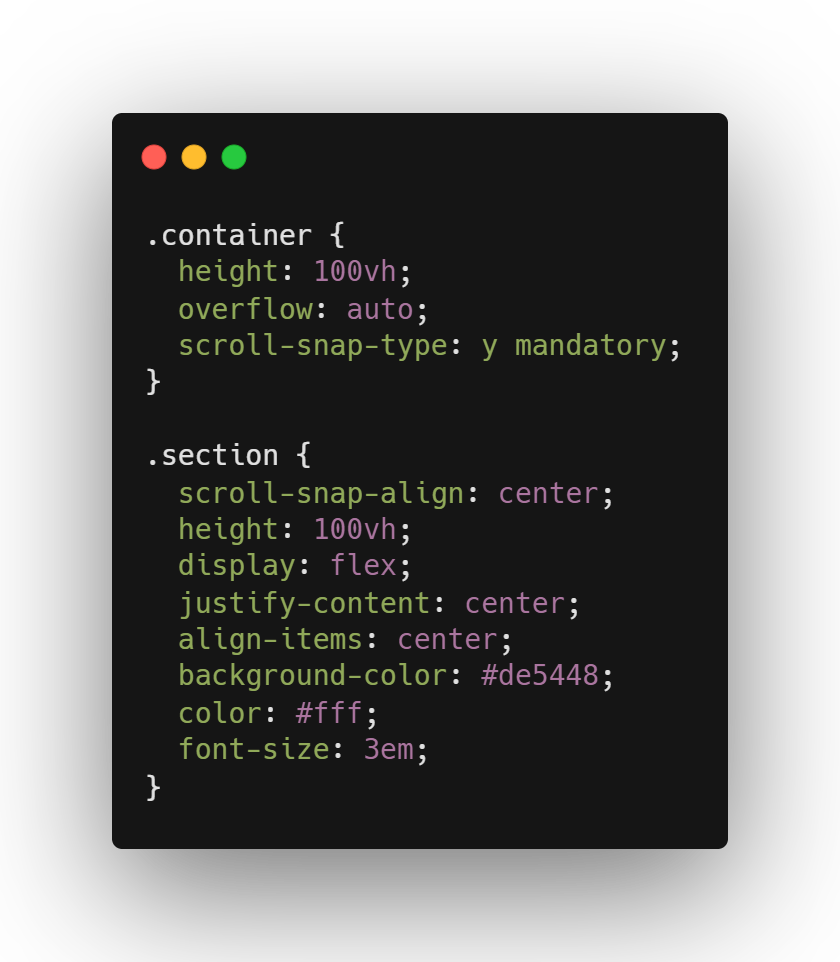

HTML & CSS
HTML en CSS worden altijd gebruikt bij het bouwen van een website. Met HTML is alle structuur en content van een site te maken en met CSS kan je alles vormgeven naar een passend en mooi ontwerp. Binnen deze twee talen zijn er heel wat tricks waar mensen niet vanaf weten, die het programmeren kunnen verbeteren.
Drop shadow
Wanneer je werkt met een afbeelding met transparante achtergrond is het mogelijk om een drop shadow te gebruiken. De meeste mensen gebruiken de meest voor de hand liggende optie, de box-shadow. Wanneer je drop-shadow gebruikt krijgt de afbeelding een schaduw rondom het échte object, zoals hierboven staat geïllustreerd. De rechter afbeelding maakt hier gebruik van deze property: filter: drop-shadow(2px 4px 8px #585858);
Typing animatie
Door CSS animaties te gebruiken is heet heel makkelijk om een typ effect te creëren. Je kan een element een animatie meegeven wat wordt uitgevoert in een aantal steps. Door deze manier kan je per letter iets laten verschijnen waardoor het lijkt alsof het wordt getypt.
Smooth scrolling
In CSS is een nieuwe property genaamd scroll-behaviour. Door scroll-behavior: smooth; te gebruiken op het html element gaat het automatisch scrollen op een soepele manier. Wanneer je dit toevoegt op een link die verwijst naar een kopje verderop de pagina, gaat het scrollen op een soepele manier in plaats van een instant verandering. Deze functionaliteit is nog vrij nieuw en is helaas nog niet ondersteund op safari.
Cursor
Dit is een wat kleinere trick met de CSS cursor. De meeste mensen weten wel dat je de cursor door CSS kan aanpassen naar bijvoorbeeld een handje of ander icoon, maar wist je dat er nog veel meer mee kan? Je kan de cursor ook een afbeelding meegeven, dan veranderd je cursor naar een afbeelding. Ook is het mogelijk om het te veranderen naar een icoon of svg.
::selection
Hier is een pseudo class waarvan je waarschijnlijk nog nooit hebt gehoord, de ::selection. Met deze class is het mogelijk om de geselecteerde tekst te stylen. Normaal wanneer je iets selecteert wordt dit een standaard kleur, bijvoorbeeld een blauwe markering onder witte tekst. Deze markering is aan te passen door de ::selection een achtergrondkleur en tekst kleur mee te geven, zoals is toegepast op deze alinea en hieronder staat beschreven:
Scroll snapping
Met CSS is het mogelijk om scroll snapping toe te passen. Wanneer je dit toepast op een element wordt er automatisch naar dit element gescrold. Op deze manier kan je een artikel precies in het midden van je scherm uitlijnen, en dit op een automatische manier die alleen gebruik maakt van CSS.
Start attribute
Dit is een trick voor HTML. Wanneer je een ordered list aanmaakt is het mogelijk om een start attribute mee te geven. Wanneer je dit doet is het mogelijk om een startwaarde mee te geven aan de lijst met objecten. Zo is het dan mogelijk om de lijst te laten starten bij 10 of een ander cijfer naar keuze.
- Boter
- Kaas
- Pasta
- Saus
Base element
Wederom en HTML trick. Het base element is een element dat aan te roepen is in de head van je HTML. Dit element wordt vooral veel gebruik wanneer je wilt dat alle links op een pagina in een nieuw tabblad worden geopend. Alles wat je dan hoeft te doen is <base target="_blank"> toe te voegen in de head, en alle links worden in een nieuw tabblad geopend zonder dat je dit elke keer moet specificeren.